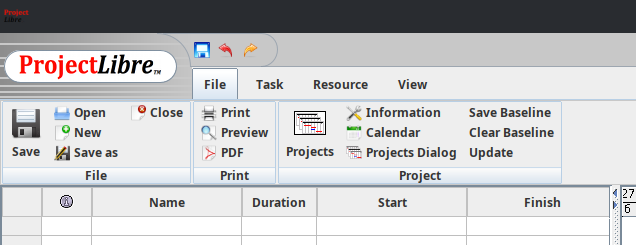
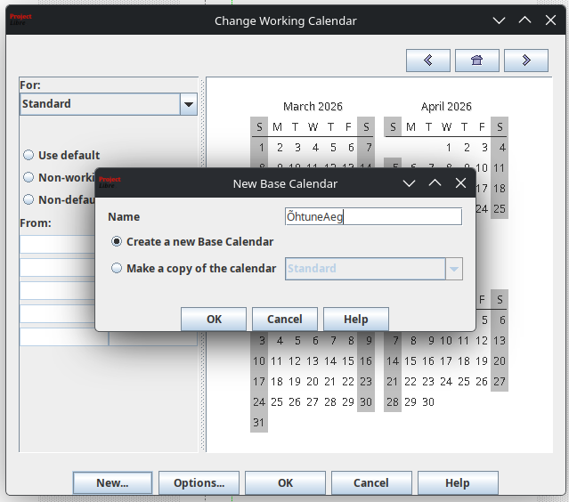
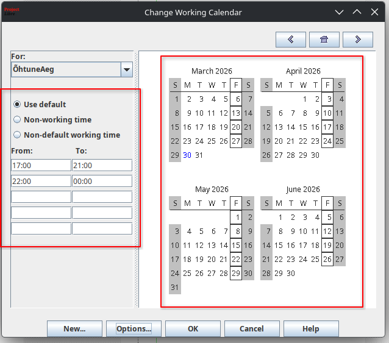
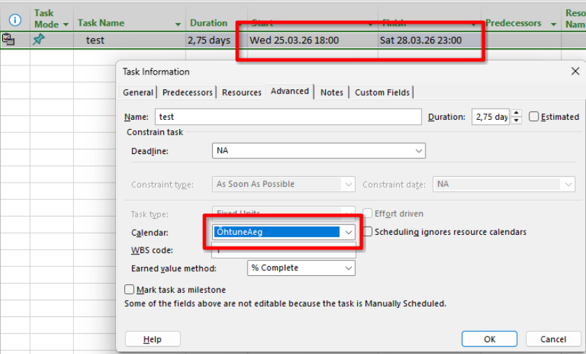
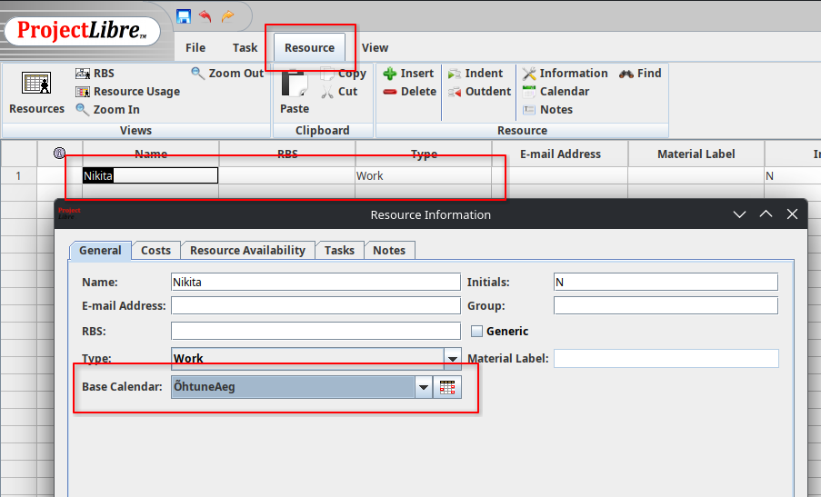
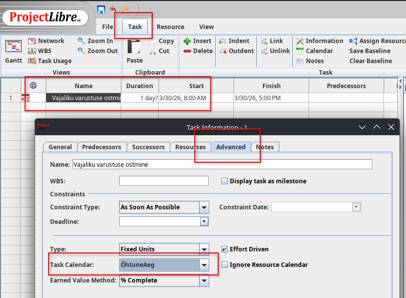

Ava kalendri seaded
Ava oma ProjectLibre ja liigu kalendri seadete juurde:
- Mine peamenüüs File vahekaardile.
- Klõpsa rippmenüüst valikule Calendar.
- Avaneb Change Working Calendar dialoogiaken.

Tõhus projektijuhtimine algab õigest ajastamisest. Õpi looma oma projekti kalendrit ProjectLibre's vaid mõne minutiga.
Ava oma ProjectLibre ja liigu kalendri seadete juurde:

Loo kalender, mis vastab just sinu projekti vajadustele:

Sea oma kalendri tööajad ja puhkepäevad:

Ühenda oma uus kalender projekti, ülesannete või ressurssidega:


